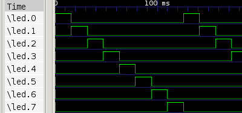
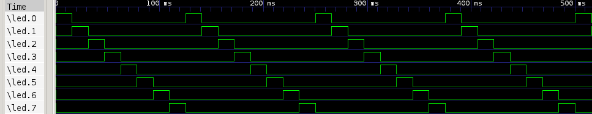

Usage¶
Configuration¶
Add sphinxcontrib.gtkwave to extensions list in conf.py:
extensions = [
'sphinxcontrib.gtkwave',
]
Basic¶
The main directive is gtkwave:
.. directive:: gtkwave
This directive accepts a single string as argument, which is file path to input file:
.. gtkwave:: docs/gtkwave_output.vcd
The above snippet would render like this:
waiting¶
The program is waiting until something is displayed. If nothing happens (e.g. missing gtkwave), after timeout (:timeout:) assertion is raised.
Options¶
timeout¶
If nothing happens, after timeout (default 12 sec) exception is raised, you can change it with this option:
.. gtkwave:: docs/gtkwave_output.vcd
:timeout: 120
screen¶
Using the option screen you can set the screen size, default is 1024x768, scrollbar and toolbar is removed from image:
.. gtkwave:: docs/gtkwave_output.vcd
:screen: 400x400
The above snippet would render like this:
Other resolution:
.. gtkwave:: docs/gtkwave_output.vcd
:screen: 100x100
The above snippet would render like this:

Image options¶
Same as in http://docutils.sourceforge.net/docs/ref/rst/directives.html#image
scale, alt¶
Example:
.. gtkwave:: docs/gtkwave_output.vcd
:scale: 200 %
:alt: alternate text
The above snippet would render like this:
{kind=link}
height, width¶
Example:
.. gtkwave:: docs/gtkwave_output.vcd
:height: 100px
:width: 100 px
The above snippet would render like this:

align¶
Example:
.. gtkwave:: docs/gtkwave_output.vcd
:align: right
The above snippet would render like this: